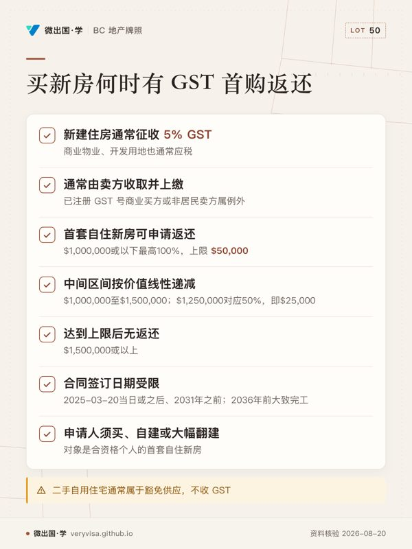

本章地位：全书时效风险最高的一章。考试口径定稿于 2020 年，而这一章讲的每一个税， 2021 年之后都动过——有的换了税率，有的换了门槛，有的换了整套机制，还多出两个考试口径上根本没有的税种。 本篇按 2026 现行口径重建，核实日期 2026-09-05，出处见文末源表。
不动产税不是一个税，是三个时点上的六个税。持牌人真正要会的，不是替客户算税， 而是在正确的时点把正确的那个税提出来——买家在写 offer 时才第一次听说外国买家附加税， 或者卖家在成交后才收到一张空置税单，损失都不由税务局承担，而由那个"没提醒我"的持牌人承担。
| 时点 | 谁交 | 有哪些税 |
|---|---|---|
| 买入 | 买方 | 物业转让税（PTT）· 外国实体附加转让税 · 商品服务税（GST） |
| 持有 | 登记业主 | 年度物业税（含学校税与附加学校税）· 投机与空置税（SVT）· 温哥华空屋税（EHT）· 联邦未充分利用住房税（UHT，2025 日历年起已取消，只剩 2022–2024 年的申报与欠税） |
| 卖出 | 卖方 | 资本利得税（含主居所豁免）· 非居民预扣 · BC 炒房税 |
ℹ️
持牌人在税这一格的边界
你的职责是识别 + 提示 + 转介，不是计算与判断豁免。 一个数字算错，客户承担后果，责任落在你身上；一句"这个税可能适用，请找会计师核"， 成本为零而保护是完整的。本篇给的所有数字，是让你知道要问什么，不是让你替客户下结论。

一、买入时（一）：物业转让税 PTT
本节回答This section answers 楼花的税基用哪个数Which figure is the tax base of a pre-sold strata unit? 本章考题 1Question 1 本章考题 2Question 2
1.1 制度设计：一笔在土地产权登记处收的过路费
物业转让税依《Property Transfer Tax Act》（物业转让税法）征收。它的触发点不是"买卖"， 而是产权登记——凡在土地产权登记处（Land Title Office）登记不动产权益的交易， 除非落进豁免，买方（transferee）必须先交清税、才能完成登记。
这个设计决定了两件事：第一，卖方没有代收义务（这一点与 GST 相反），税由买方连同 物业转让税申报表直接交给政府；第二，不登记就不触发——所以能登记的权益都在射程内： fee simple（完全所有权）、agreement for sale（分期付款购买权）、life estate（终身权益）、 lease（租约）、Crown grant（皇家授地）等。
计税基数是登记当日的公平市值（fair market value）。公开市场上正常成交且很快登记的， 成交价通常就被当作公平市值；非公开市场转让（家庭内部、法院命令、清盘）则可能改用独立评估 或 BC Assessment 的评估值来确定。
⚠️
楼花（pre-sold strata）不按公平市值算，按你实际付出去的总额算
在开发商把 strata plan（分层地契图则）交存登记处之前签下的合同，就是 pre-sold strata unit。 这一格的税基是你为取得这套房实际支付的全部金额，包含升级选配的钱， 也包含转让（assignment）时付给上手的溢价。依据是《Property Transfer Tax Act》s.1.4。 为什么这样定：登记那天的市值是未知数，而实付金额是确定的， 买家因此能提前知道自己要交多少税、也能提前知道自己还够不够首购豁免的门槛。
1.2 一般税率：四段，2026 年现行
| 公平市值区间 | 税率 |
|---|---|
| 首 $200,000 | 1% |
| $200,000 以上至 $2,000,000 | 2% |
| $2,000,000 以上 | 3% |
| 住宅部分 $3,000,000 以上再加征 | 再 2%（2018-02-21 起） |
这四段自 2018 年至今没有变过，考试口径那一版是对的，考场与柜台同一个答案。
混合用途物业（住宅 + 商业）只对住宅部分加征那 2%；因业主或农户自住而被划为农地的， 最多 0.5 公顷按住宅计。
🔧
一个"$3,000,000 以上再 2%"最容易被忽略的后果
这一档是分段而不是全额跳档——只对超过 $3,000,000 的那一部分征。 客户听说"三百万以上加 2%"常误以为整套房都要多交 2%，因而在议价时做出错误让步。 一句"只有超出的那部分"，就是持牌人在这一格的实际价值。
1.3 首次购房者豁免：2024-04-01 换了门槛，也换了机制
这是本章最贵的一处错位。考试口径（©2020）写的门槛是全额豁免 $500,000 以下、 部分豁免至 $525,000，那是 2017-02-22 起的口径；2024-04-01 起，两件事同时变了：
| 考试口径（©2020，2017-02-22 起口径） | 2026 现行（2024-04-01 起） | |
|---|---|---|
| 全额豁免线 | 公平市值 $500,000 或以下 | 公平市值 $835,000 或以下 |
| 部分豁免区间 | $500,000 以上至 $525,000 | $835,000 以上至 $860,000 |
| 豁免机制 | 达线即整笔免税 | 免的是成交价的前 $500,000 那部分的税 |
第二行的机制变化比第一行的数字更容易失分。 现行口径下，一套 $700,000 的首套房 并不是完全不交税——它免的是前 $500,000 对应的税，剩下 $200,000 照常按 2% 计。 "我在 $835,000 以下所以一分不用交"是错的。
其余条件（2026 现行）：
- 买方是加拿大公民或永久居民；
- 登记前在 BC 住满一年，或者在紧接登记日之前的 6 个课税年度里以 BC 居民身份报过至少 2 次税；
- 全世界范围内从未拥有过作为主居所的登记权益；
- 从未拿过首购豁免或退税；
- 物业只作主居所、面积 0.5 公顷（1.24 英亩）或以下、地上只有住宅类改良物。
✕
拿到豁免之后还有一年的"考察期"，而假申报的罚款等于免掉的那笔税
登记后必须在 92 天内搬进去，并连续自住到登记日一周年。 中途搬走的只能保住一部分。若在"从未拥有过主居所"或"从未拿过首购豁免"上作假申报， 罚款金额等于所申请的豁免或退税额，且是在补税之外另罚。 业主去世，或依《Family Law Act》（家庭法）的分居协议、法院命令转让的，仍保住豁免。
漏报了怎么办：符合条件但登记时没申请的，可在登记日一周年起至 18 个月内申请退税。
1.4 新建住房豁免：$750,000 → $1,100,000
同一天（2024-04-01）调整的还有新建住房豁免（Newly Built Home Exemption）： 全额豁免线由 $750,000 提到 $1,100,000，部分豁免延伸到 $1,150,000 （考试口径那一版是 $750,000 与 $800,000）。
"新建住房"的范围比直觉宽：空地上新建且建成后从未有人居住过的独立屋、 新建公寓楼里未入住过的单元、放置并固定在空地上的活动房屋、整体迁移到另一块空地上的房屋、 随地块细分而分割出来的住宅，以及由非住宅改造为住宅、改造开始后未作住宅使用过的建筑。
⚠️
首购豁免与新建住房豁免是两套门槛，不是一套
一套 $900,000 的全新公寓，作为首套房买超过了 $835,000 的线， 但作为新建住房在 $1,100,000 以内。两个程序条件不同、门槛不同、申报代码不同， 客户符合哪一个要分别判断。混着记，就会在两个方向上都给错答案。
1.5 专建出租楼豁免：考试口径上完全没有这一条
2024 年起 BC 为鼓励新建长租楼另开了一道豁免（Purpose-Built Rental Exemption）， 考试口径定稿时它还不存在：
- 2024-01-01 至 2024-12-31 购入的合资格新建专建出租楼：只免那笔"$3,000,000 以上再 2%"；
- 2025-01-01 至 2030-12-31 购入的合资格新建专建出租楼：全免物业转让税。
合资格的条件：非分层产权（non-stratified）、登记时至少有 4 套独立单元、 住宅部分全部用于按月或更长期限出租、且持续出租至少 10 年。
1.6 外国实体附加转让税：20%，五个指定区域
外国国民（foreign national）、外国公司（foreign corporation）与应税受托人（taxable trustee） 购买住宅物业时，除一般转让税外，还要按其在产权上登记的权益比例， 对住宅部分的公平市值另交 20%。
2026 年现行的五个指定区域：
- Capital Regional District（首府地区）
- Fraser Valley Regional District（菲沙河谷地区）
- Metro Vancouver Regional District（大温哥华地区）
- Regional District of Central Okanagan（中奥肯那根地区）
- Regional District of Nanaimo（纳奈莫地区）
不适用于 Tsawwassen First Nation 条约土地。考试口径记的税率与区域范围（2018-02-21 起由 15% 提到 20% 并扩围）至今未变——这是本章少数几个考场与柜台答案一致的地方。
✕
"外国公司"与"应税受托人"的判定比字面复杂得多
一家在 BC 注册、股东名单上看不到外国人的公司，仍可能因控制关系被判为外国公司； 一个加拿大公民替外国国民代持产权，会被判为应税受托人。 这两个定义要回税法与判例去解，持牌人不作判断——识别出"结构里有非加拿大成分"就转介税务专业人士。
1.7 先于税的一道门：联邦外国买家禁令
比 20% 附加税更靠前的问题是：这位买家现在根本能不能买。
《Prohibition on the Purchase of Residential Property by Non-Canadians Act》 （禁止非加拿大人购买住宅物业法，S.C. 2022, c. 10, s. 235，2022-06-23 御准）自 2023-01-01 起 禁止非加拿大人直接或间接购买住宅物业。考试口径定稿时这部法还不存在。
- 期限：原定 2025-01-01 到期，联邦财政部 2024-02-04 宣布延长两年，至 2027-01-01。 截至 2026-10-30，司法部现行合并文本（current to 2026-09-30）仍把废止条款列为尚未生效的修正（S.C. 2022, c. 10, s. 236），也未见再次延期的官方公告。 到期日前后联邦可能再作决定，给客户讲 2027 年以后的情形之前，先回 canada.ca 与司法部法规页确认当时的状态。
- 罚则：违反者，以及明知而教唆、诱使、协助或唆使非加拿大人购买的任何人或实体， 循简易程序定罪可处最高 $10,000 罚金；法院可应部长申请下令出售该物业。
- 交易本身不因此无效（该法明文规定违反不影响买卖的有效性）——所以"合同还算数"不是免责理由。
✕
"协助或唆使"这四个字直接指向持牌人
罚则条款不只罚买家。明知客户是非加拿大人、仍协助其完成购买的持牌人， 落在同一条罚则之内。这一条在考试口径上一个字都没有，而它是全章后果最重的一条。
二、买入时（二）：GST 与 2025 年新增的首次购房者返还
本节回答This section answers 首次购房者返还在不在手册Is the first-time buyer rebate in the manual? 本章考题 4Question 4
2.1 长青部分：新房交、二手自住房不交
商品服务税（GST）税率 5%，依《Excise Tax Act》（消费税法）征收。不动产在这部法下的 基本推定是"除非落进豁免供应（exempt supply），否则就是应税供应"。 最常见的豁免供应正是二手自用住宅——所以一般人买卖旧房不涉及 GST； 新建住房、商业物业、开发用地则通常应税。
与 PTT 相反，GST 的收取与上缴义务在卖方（作为政府的代收人）， 但有两个重要例外：买方已注册 GST 号的商业交易由买方自行申报并抵扣（input tax credit，进项税额抵免）， 以及卖方为非居民时由买方自行评估申报。
新房返还（new housing rebate）常以贷记项出现在交割结算表（statement of adjustments）上， 这是持牌人在交割阶段会实际看到它的地方。
2.2 2025 年新增：首次购房者 GST 返还
考试口径完全没有这一项——它 2025 年才提出、2026 年才成为法律。
| 新房价值 | 返还 |
|---|---|
| $1,000,000 或以下 | 最高 100%，上限 $50,000 |
| $1,000,000 至 $1,500,000 | 上限线性递减（如 $1,250,000 对应 50%，即 $25,000） |
| $1,500,000 或以上 | 无返还 |
适用对象是购买、自建或大幅翻建首套自住新房的合资格个人。 一般口径是：与建商签订的买卖合同须在 2025-03-20 当日或之后、2031 年之前订立（自建房则是在这段时间内动工）， 房屋须在 2036 年之前大致完工。承载它的法案（Bill C-4）于 2026-03-13 获御准。
🔧
这一条改变的是新盘谈话的内容，不只是一个数字
在 $1,000,000 以下的新盘，首购买家可能一分 GST 都不用最终负担； 而在 $1,000,000 到 $1,500,000 之间，每贵一块钱，返还就少一点—— 于是"要不要加选配升级"这类决定，第一次有了税务上的拐点。 持牌人不替客户算这笔账，但要让他知道这个拐点存在。
三、持有时（一）：年度物业税
本节回答This section answers 评估通知反映哪一天Which day's market does the assessment notice reflect?
3.1 谁交、税基是什么、值怎么定
纳税义务在业主，不在占用人。《Community Charter》（社区宪章）s.251 规定， 当年的评估业主对该年度的一切税项、以及以往年度未付税项负责。 《Assessment Act》（评估法）里的"业主"包括 fee simple 的登记所有人、 终身权益的终身租户，以及最后一份已登记 agreement for sale 的持有人。
税基是土地 + 改良物（improvements）。评估基准是"实际价值（actual value）"， 即土地与其上改良物的完全所有权在市场上的价值。
四个关键日期是整套评估制度的骨架（长青，考试口径与现行一致）：
| 日期 | 定什么 |
|---|---|
| 7 月 1 日 | 次年评估册的估值日（评估值反映的是这一天的市况） |
| 10 月 31 日 | 物业的状态与状况定格日 |
| 11 月 30 日 | 产权归属定格日（谁是那一年的业主） |
| 12 月 31 日 | 评估册完成、评估通知寄出 |
⚠️
评估值不等于今天的市价，差着最多一年半
客户拿到 1 月寄来的评估通知，看到的是上一年 7 月 1 日的市况。 房价上行时它偏低，下行时它偏高。所以"评估值就是我这房值多少钱"是错的， 用它来定挂牌价更是错的——它是计税用的口径，不是当下的市场意见。
3.2 税率怎么来：mill rate 与九个物业类别
各征税机关（市政府、乡村地区的 Surveyor of Taxes、教育部、学区、BC Assessment、 市政财务局、区域局、区域交通委员会）每年春天各自定率，以筹到各自要的收入。 税率用 mill rate 表达：每 $1,000 净应税价值收多少钱。
物业按用途分九类，其中住宅是第 1 类。一处物业有多种用途时，评估师会把价值拆开落进不同类别， 形成 split classification（分割分类）——这直接影响税率，因而直接影响持有成本。
3.3 附加学校税：考试口径只提到它存在，现行有具体两档且 2027 要涨
学校税是物业税单上的一项，与业主有没有孩子上学无关。高价住宅另加一道附加学校税：
| 2026 现行 | 2027-01-01 起 | |
|---|---|---|
| $3,000,000 至 $4,000,000 的住宅部分 | 0.2% | 0.3% |
| $4,000,000 以上的住宅部分 | 0.4% | 0.6% |
只对超过 $3,000,000 的部分征，头 $3,000,000 不征。 四套或以上单元的非分层出租楼不适用；混合用途物业只对住宅部分中超过 $3,000,000 的部分适用。
3.4 业主补助金（Home Owner Grant）：2026 年的门槛与递减公式
业主补助金减免的是年度物业税，适用于自住主居所。基本条件：登记业主、 加拿大公民或永久居民、在 BC 居住、以该物业为主居所。
2026 年门槛：$2,075,000。 评估值或分割价值在门槛以内的可拿全额； 超过门槛的按公式递减：每超出 $1,000 减 $5。递减到零的分界点：
| 全省一般地区 | 北部与乡村地区 | |
|---|---|---|
| 基本档补助归零 | 评估值超过 $2,189,000 | 超过 $2,229,000 |
| 附加档（长者/退伍军人/残障人士等）归零 | 超过 $2,244,000 | 超过 $2,284,000 |
还有一道自付底线：拿基本档前须自付至少 $350 物业税；符合附加档条件的（如 65 岁及以上长者） 自付至少 $100。这笔自付用来分担道路维护、治安这类服务的成本。
2027-01-01 起的变化已经写在官方页上：基本档统一为 $570、长者等附加档统一为 $845， 全省一致，北部与乡村地区原有的 $200 加成取消。
ℹ️
从上面两组数字可以互相验算
递减是每超 $1,000 减 $5，而 2026 年基本档在超出门槛 $114,000 时归零—— $114,000 ÷ $1,000 × $5 恰好是 $570。北部与乡村地区多出的 $40,000 缓冲，对应的正是那 $200 加成。 会算这一步，就不必去背四个归零点。
3.5 延税计划：考试口径只讲了一半
延税（Property Tax Deferment）是省政府替业主先垫付当年物业税、在产权上登记一道限制性留置权 的贷款计划。考试口径只描述了"支持子女的业主、最低 15% 权益"这一半， 现行是两个并行的项目、两条不同的权益线：
| 项目 | 谁能用 | 最低权益 |
|---|---|---|
| 常规计划（Regular） | 当年 55 岁或以上 · 任何年龄的丧偶配偶 · 残障人士 | 25% |
| 有子女家庭计划（Families with children） | 父母、继父母，或在经济上供养子女者 | 15% |
两者共同条件：加拿大公民或永久居民、登记业主、申请前在 BC 住满一年、 以往年度物业税与水电杂费全部结清。
利息口径也变了：2025 及以前税年延缴的按单利计息，2026 及以后税年延缴的按复利计息。
⚠️
延税不是免税，它是一笔挂在产权上的贷款
它会在 title 上登记为一道限制性留置权，业主在此期间对产权能做的变更受限， 而且利息一直在走。给客户介绍这个计划时说"可以不用交"，是把贷款说成了补助。
3.6 评估上诉：两级，两个截止日
| 级别 | 机构 | 截止日 |
|---|---|---|
| 第一级 | 物业评估复核委员会（Property Assessment Review Panel，PARP） | 1 月 31 日 |
| 第二级 | 物业评估上诉委员会（Property Assessment Appeal Board，PAAB） | 4 月 30 日 |
再往上依次是 BC 最高法院、BC 上诉法院、加拿大最高法院。
可以提出的理由包括：某人被错误列入或遗漏、某物业被错误列入或遗漏、 估值过高或过低、分类错误（例如错划为农地）、豁免被错误给予或拒绝。 提出人不限于业主——邻居也可以主张某处物业被低估，因为低估会把税负转嫁给别人。
🔧
截止日碰上周末会顺延，别照着"1 月 31 日"口算
2026 年这一轮的 PARP 截止日就因 1 月 31 日落在周末而顺延。涉及具体年份的截止日回官方页确认， 不要凭记忆给客户报日期。
四、持有时（二）：三级政府的空置类税，这是最容易搞混的一格
本节回答This section answers 手册里Lions Bay排不排除Does the manual exclude Lions Bay? 本章考题 5Question 5
BC 的一处住宅，曾经可能同时落进三个不同层级政府的空置类税；联邦那一个 2025 年起取消后，持有期内还剩省、市两个。它们各有各的申报、各有各的豁免， 其中一个免了不代表另一个也免。
| 投机与空置税 SVT | 温哥华空屋税 EHT | 联邦未充分利用住房税 UHT | |
|---|---|---|---|
| 谁征 | BC 省 | 温哥华市 | 联邦（CRA） |
| 依据 | 省法 | Vacancy Tax By-law No. 11674 | 《Underused Housing Tax Act》 |
| 起征年 | 2018 | 2017 | 2022（2025 日历年起取消） |
| 计税基数 | 评估值 | 评估应税值 | 物业价值 |
| 申报 | 每年，3 月 31 日前 | 每年 | 只剩 2022–2024 年；2025 年起不必申报 |
4.1 投机与空置税（SVT）：税率两连涨，抵免翻倍，市镇扩了一大圈
税率（考试口径记的是 2019 年起 0.5% / 2.0%，那一版已经过时两级）：
| 税年 | 加拿大公民或永久居民（非"未纳税全球收入者"） | 外国业主与"未纳税全球收入者" |
|---|---|---|
| 2018 | 0.5% | 0.5% |
| 2019–2025 | 0.5% | 2% |
| 2026 | 1% | 3% |
| 2027 起 | 1% | 4% |
税率按当年使用情况适用：2026 年的新税率管的是 2026 年的使用，不追溯 2025 及以前。 按 12 月 31 日的产权归属判定纳税人，按当年 7 月 1 日的评估值计税， 当年的税在次年 7 月的第一个营业日到期。多名共有人按各自份额分摊。
术语也换了：考试口径里的"卫星家庭（satellite family）"，现行官方口径改称 未纳税全球收入者（untaxed worldwide earner）——它是一个更宽的类别，卫星家庭包含在内。 satellite family 是旧版用语，现行名称及正式考试范围分别回官方资料与注册课程核对。
BC 居民税收抵免也翻了倍：2018 至 2025 税年上限 $2,000（考试口径记的就是这个数）， 2026 税年起上限 $4,000。适用于加拿大公民、永久居民、获确认的 BC 省提名人，且不属于未纳税全球收入者。
适用地区扩了一大圈。 考试口径那一版列的是首府地区、大温地区（当时排除 Bowen Island、 Lions Bay 与选区 A，含 UBC 与大学捐赠地）、Abbotsford、Mission、Chilliwack、 Kelowna、West Kelowna、Nanaimo、Lantzville。2026 现行的名单在两个区域清单之外， 另有 26 个独立市镇——Courtenay、Duncan、Kamloops、Parksville、Penticton、Salmon Arm、 Vernon、Coldstream、Lake Country、North Cowichan、Peachland、Squamish、Summerland、 Comox、Ladysmith、Lake Cowichan、Qualicum Beach、Cumberland 等都是 2020 年之后加进来的。
✕
Lions Bay 从"排除"变成了"包括"
考试口径明确把 Lions Bay 列在大温地区的排除项里，现行名单上它是一个独立列出的应税市镇。 这是整章里最典型的一处"照考试口径答会给客户造成真金白银损失"的错位： 业主以为不用申报，而不申报本身就会被认定为应税。 客户物业在不在名单上，一律回官方地图或名单查当年版本，不凭记忆答。
排除项（2026 现行）：保留地、条约土地与自治原住民族土地；只能靠飞机或船到达的岛屿 （温哥华岛除外）；Vernon 市内的 Predator Ridge 度假区。
4.2 温哥华空屋税（EHT）：考试口径写 1%，现行是 3%
温哥华依《Vacancy Tax By-law No. 11674》征收空屋税， 一年中空置满六个月的住宅要交。
税率从 1% 涨到了 3%：考试口径记的 1% 是 2017 年开征时的税率； 2025 参照年空置的物业，按其 2025 年评估应税值的 3% 征税。
机制（长青部分考试口径是对的）：
- 业主每年收到并必须提交物业状态申报（Property Status Declaration，PSD）； 不申报即视同空置；
- 自住满六个月的、或以书面租约长租（每次连续至少 30 天、全年累计满六个月）的，不征；
- 短租（无相应牌照的民宿形式、每段短于 30 天）不算长租，仍会被征；
- 豁免另有一张清单（改建或大修中且已取得许可、业主住院或接受长期照护、业主去世且遗产尚未获授权、 当年产权转让过、只能用作车位或因地块条件无法建住宅、法院命令禁止占用等），每一项都另有限制条件。
2025 参照年的时间线：申报截止 2026-02-03，税款到期 2026-04-16。
🔧
这是持牌人在合同里能真正做点事的一格
买方一侧值得考虑写进买卖合同的条款：卖方须提供已提交的 PSD 副本； 交割时提供法定声明确认申报属实；就"本物业当年及上一年未空置超过 180 天"作出明示陈述与保证； 市府尚未认定时预留一笔扣留款；已明确应税时约定由卖方承担并由买方的过户律师作账务调整。 这些条款的价值，正是因为不申报就默认应税，而认定往往发生在成交之后。
4.3 联邦未充分利用住房税（UHT）：2025 日历年起已经取消
联邦 UHT 曾对加拿大境内空置或未充分利用住房按 1% 年征， 2022-01-01 起生效，主要针对外国国民业主，但某些加拿大业主（特定合伙人、受托人、公司）也可能落入。 它走过两步：
- 2024-06-20，Bill C-69 中的修订案获御准：自 2023 日历年起，绝大多数加拿大业主既不需要申报、也不需要缴税；
- 2026-03-26，《Budget 2025 Implementation Act, No. 1》获御准：2025 日历年及以后，受影响业主一律不必申报、不必缴税。 2022、2023、2024 三个日历年的申报与缴税义务仍然有效，欠着没报的照样会被追。
所以 2026 年给客户讲空置类税，在持有成本里只剩省、市两个；联邦这一个只在补报以前年度时才出现。 考试口径完全没有这个税，而中文互联网上大量 2022–2024 年的攻略仍写着"每年都要报"。
⚠️
空置类税各判各的，免了一个不代表免了另一个
官方口径明写：这些税由不同层级的政府各自实施，必须分别判断； 在一个税下豁免，仍可能要就另一个税申报并缴纳。 一处温哥华的空置公寓，2026 年仍可能同时触发 SVT 与 EHT 两张单子； 若业主 2022–2024 年间有 UHT 申报义务而没报，那是另一笔旧账。
五、卖出时：资本利得、主居所、非居民预扣与炒房税
本节回答This section answers 主居所的利得怎么课How is the gain on a principal residence taxed?
5.1 资本利得与主居所豁免
物业卖价高于买价时，差额通常按资本利得处理，一般只有一部分计入应税收入 （考试口径记的比例是 50%）。卖的是主居所（principal residence）时通常可获豁免， 条件是该年度业主在该物业居住过、且没有另一处物业被指定为主居所。 若持有期间某些年份它不是主居所、或有一部分面积另作出租等用途，对应的那部分利得仍可能要交税。
但利得不一定是资本利得。 若整件事的性质更接近做生意，就按营业收入全额课税。 法院看的是一组因素：取得时的意图与实际执行、融资方式（短期融资指向"买来就打算卖"）、 业主的职业与过往交易频率、持有时间、出售时的背景与动机、其他人有没有权益及其打算的用途。
⚠️
"自住房卖了不用交税"这句话在两个地方会翻车
第一，主居所豁免只覆盖被指定为主居所的那些年份与那部分面积； 第二，被认定为营业性质时，主居所豁免根本不进入讨论。 频繁买卖、短期融资、持有时间很短的客户，正是最容易踩这两条的人。
5.2 非居民卖家：买方有 25% 的预扣义务
卖家若不是加拿大税务居民，买方须从总价款中预扣 25% 并上缴税务局。 这不是最终税负，只是暂扣（可能有税收协定使实际税负更低，也可能通过合规程序减少预扣）。 卖方是加拿大居民时，买方没有预扣义务。
✕
这一条把买方置于风险之下，而买方通常毫无察觉
预扣义务在买方身上。卖家的居民身份没有查清、款项已经全额付出， 追缴时找的是买方。所以"卖方是不是加拿大税务居民"必须在交割流程里被明确处理， 这是过户律师的动作，但提出这个问题的时点在持牌人手里。
5.3 BC 炒房税：考试口径那张税表缺的一整行
2025-01-01 起，BC 对持有不足 730 天出售的住宅物业利润另征一个独立税种。 考试口径定稿于 2020 年，这一税 2025 年才有。它的税率曲线、楼花适用、主居所扣除与豁免， 另篇专讲：BC 炒房税。
六、柜台上怎么做
本节回答This section answers 上市五问里哪句对空屋Which of the five listing questions targets the empty homes tax?
上市（listing）阶段问卖方五句话：
- 你是加拿大税务居民吗？（决定买方有没有 25% 预扣义务）
- 这套房你持有多久了？（不足 730 天进入炒房税话题）
- 它是不是你的主居所，全程都是吗？（决定主居所豁免的覆盖范围）
- 物业在温哥华市内吗？去年与今年的物业状态申报交了吗？（EHT）
- 物业在投机与空置税的应税地区内吗？今年 3 月 31 日前申报了吗？（SVT）
写 offer（买方）阶段问买方四句话：
- 你是加拿大公民或永久居民吗？（先过联邦禁令那道门，再谈 20% 附加税）
- 这是你的第一套自住房吗？（首购豁免与首次购房者 GST 返还两条线）
- 这是新房吗、是楼花吗？（新建住房豁免、GST、楼花的税基算法）
- 你打算自住还是出租？（自住关系到豁免的占用条件，出租与空置关系到省、市两个空置税）
时限速查（会变的日期每年回官方页确认）：
| 事项 | 时限 |
|---|---|
| 首购／新建住房豁免：搬入 | 登记后 92 天内，并住到一周年 |
| 首购豁免漏报后退税 | 登记日一周年起至 18 个月内 |
| 投机与空置税申报 | 每年 3 月 31 日前 |
| 投机与空置税缴款 | 次年 7 月第一个营业日 |
| 评估上诉第一级（PARP） | 1 月 31 日（遇周末顺延） |
| 评估上诉第二级（PAAB） | 4 月 30 日 |
七、三个情景
本节回答This section answers 两套新房的税务拐点落在哪里Where do the tax turning points fall for the two new homes?
情景一 · 首购买家在 $835,000 以下就不用交税吗
李女士首次置业，在本拿比买一套二手公寓，成交并登记价 $700,000，符合首购豁免的全部条件。 按 2026 现行口径，她免掉的是前 $500,000 对应的税，剩下的 $200,000 按 2% 计， 即约 $4,000 仍要交。若照考试口径那一版的旧机制理解成"$835,000 以下全免"， 她在做预算时就会少留出这笔钱。
情景二 · 一处房，两张单子，外加一笔可能的旧账
陈先生是外国国民，在温哥华市内持有一套评估值 $2,000,000 的公寓，全年空置。 2026 税年他可能同时面对：省投机与空置税（外国业主档 3%）与温哥华空屋税（按参照年使用情况，现行 3%）。 联邦未充分利用住房税 2025 日历年起已取消，但他若在 2022–2024 年间就持有这套房而当年没报，那几年的 UHT 申报与税款仍要补上。 各个税各自申报、各自判断豁免。持牌人的动作不是替他算这几笔， 而是在他问"空着放两年再卖行不行"的时候，把这些税的名字说出来，并把他送去税务专业人士那里。
情景三 · 新盘的那个拐点
王先生首次置业，在素里看两套新房：A 套 $980,000，B 套 $1,180,000。 两套都在新建住房豁免的 $1,100,000 线以下吗？——A 在，B 不在（B 落进 $1,100,000 至 $1,150,000 的部分豁免区间之外）。首次购房者 GST 返还呢？——A 在 $1,000,000 以下可拿满额上限 $50,000 那一档， B 落在 $1,000,000 至 $1,500,000 的递减段。两套房差 $200,000 的报价， 税上的差距远不止 $200,000 × 某个税率。这正是持牌人在新盘销售中能提供的、 通用搜索引擎给不出的价值：知道拐点在哪里，并让客户在下单之前就知道。
八、考试口径 vs 现行：本章逐条对照
本节回答This section answers 延税在手册里写了谁Whom does the manual write deferment for? 本章考题 3Question 3
| # | 考试口径（©2020）说 | 2026 现行是 | 依据与生效日 |
|---|---|---|---|
| 1 | 首购豁免：$500,000 全免，$525,000 部分 | $835,000 全免，$860,000 部分；且免的是成交价前 $500,000 那部分 | gov.bc.ca 首购豁免页，2024-04-01 起 |
| 2 | 新建住房豁免：$750,000 / $800,000 | $1,100,000 / $1,150,000 | gov.bc.ca 新建住房豁免页，2024-04-01 起 |
| 3 | 无专建出租楼豁免 | 2024 年免那 2%；2025-01-01 至 2030-12-31 全免 | gov.bc.ca 专建出租豁免页 |
| 4 | 投机与空置税 0.5% / 2% | 2026 年 1% / 3%；2027 年起 1% / 4% | gov.bc.ca 投机与空置税税率页 |
| 5 | BC 居民抵免上限 $2,000 | 2026 税年起 $4,000 | gov.bc.ca 投机与空置税抵免页 |
| 6 | 应税地区含 Lions Bay 排除项 | Lions Bay 现为应税市镇；另有约 26 个独立市镇 | gov.bc.ca 应税地区页 |
| 7 | 称"satellite family（卫星家庭）" | 官方现行术语为 untaxed worldwide earner（未纳税全球收入者） | 同上 |
| 8 | 温哥华空屋税 1% | 2025 参照年 3% | vancouver.ca 空屋税页 |
| 9 | 无联邦未充分利用住房税 | 1%，2022-01-01 起；2023 年起多数加拿大业主免申报；2025 日历年起整税取消（2022–2024 年义务仍在） | canada.ca UHT 页；Budget 2025 Implementation Act, No. 1，2026-03-26 御准 |
| 10 | 无联邦外国买家禁令 | 2023-01-01 起禁止，延至 2027-01-01；协助者同罚，最高 $10,000 | 该法原文 + 联邦财政部 2024-02-04 公告 |
| 11 | 无首次购房者 GST 返还 | ≤$1,000,000 最高返还 $50,000，至 $1,500,000 递减归零；合同在 2025-03-20 至 2030 年底之间订立 | canada.ca CRA 页；Bill C-4，2026-03-13 御准 |
| 12 | 延税只讲"支持子女 + 15% 权益" | 常规计划 25%（55 岁以上等）／有子女家庭计划 15%；2026 税年起复利 | gov.bc.ca 延税资格页 |
| 13 | 附加学校税只提到存在 | 0.2% / 0.4%；2027-01-01 起 0.3% / 0.6% | gov.bc.ca 附加学校税页 |
| 14 | 无炒房税 | 2025-01-01 起独立税种（另篇专讲） | 见 ch19-home-flipping-tax |
这张表怎么用：©2020 列是历史对照，正式考试按注册课程现行考纲及官方更新准备， 出现的数字与地区名单都以那一版为准；实务按现行那一列办——给客户讲、写合同条款、 判断要不要转介税务专业人士时，一律用现行法与官方现行页的数值。 两列在本章有 14 处不一致，是全书之最。
ℹ️
没有变的那些，同样值得记住
一般转让税四段税率（1% / 2% / 3% / 再 2%）、外国实体附加税 20% 与五个指定区域、 GST 税率 5% 与二手自住房豁免、评估的四个关键日期、两级上诉与两个截止日、 非居民预扣 25%——这些考试口径与现行一致，是本章可以放心按考试口径记的部分。
术语双语对照
| 中文 | 英文 | 备注 |
|---|---|---|
| 物业转让税 | Property Transfer Tax（PTT） | 登记时由买方交，卖方无代收义务 |
| 公平市值 | fair market value | PTT 的计税基数 |
| 楼花单元 | pre-sold strata unit | 税基＝实付总额，含升级与转让溢价 |
| 首次购房者计划 | First Time Home Buyers' Program | 2026 门槛 $835,000 / $860,000 |
| 新建住房豁免 | Newly Built Home Exemption | 2026 门槛 $1,100,000 / $1,150,000 |
| 专建出租楼豁免 | Purpose-Built Rental Exemption | 2025–2030 全免 |
| 外国实体附加转让税 | additional property transfer tax | 20%，五个指定区域 |
| 应税受托人 | taxable trustee | 替外国实体代持产权者 |
| 商品服务税 | Goods and Services Tax（GST） | 5%；二手自住住宅属豁免供应 |
| 进项税额抵免 | input tax credit | 商业买方的 GST 回收机制 |
| 首次购房者 GST 返还 | FTHB GST/HST rebate | 上限 $50,000 |
| 实际价值 | actual value | 物业税的评估基准 |
| 分割分类 | split classification | 一处物业价值拆入多个类别 |
| 业主补助金 | Home Owner Grant | 2026 门槛 $2,075,000 |
| 延税计划 | Property Tax Deferment | 是贷款，会在产权上登记 |
| 物业评估复核委员会 | Property Assessment Review Panel（PARP） | 1 月 31 日 |
| 物业评估上诉委员会 | Property Assessment Appeal Board（PAAB） | 4 月 30 日 |
| 投机与空置税 | Speculation and Vacancy Tax（SVT） | 省税，3 月 31 日申报 |
| 未纳税全球收入者 | untaxed worldwide earner | 取代考试口径的"卫星家庭"说法 |
| 空屋税 | Empty Homes Tax（EHT） | 温哥华市，2025 参照年 3% |
| 物业状态申报 | Property Status Declaration（PSD） | 不申报即视同空置 |
| 未充分利用住房税 | Underused Housing Tax（UHT） | 联邦 1%，2022–2024 年适用，2025 起取消 |
| 主居所豁免 | principal residence exemption | 按年份与面积分摊 |
源表（本篇判据）
| # | 事实 | 一手源 URL | 核实日 |
|---|---|---|---|
| 1 | PTT 四段税率、公平市值定义、登记触发 | www2.gov.bc.ca/gov/content/taxes/property-taxes/property-transfer-tax（BC 财政厅（gov.bc.ca）（论坛解读）） |
2026-09-05 |
| 2 | 首购豁免 $835,000 / $860,000、前 $500,000 机制、92 天、假申报同额罚款 | 同站 /exemptions/first-time-home-buyers（BC 财政厅（gov.bc.ca）（论坛解读）） |
2026-09-05 |
| 3 | 新建住房豁免 $1,100,000 / $1,150,000 与"新建"定义 | 同站 /exemptions/newly-built-home-exemption（BC 财政厅（gov.bc.ca）（论坛解读）） |
2026-09-05 |
| 4 | 专建出租楼豁免 2024 免 2%、2025–2030 全免、4 套与 10 年条件 | 同站 /exemptions/purpose-built-rental-exemption（BC 财政厅（gov.bc.ca）） |
2026-09-05 |
| 5 | 外国实体附加税 20% 与五个指定区域 | 同站 /additional-property-transfer-tax（BC 财政厅（gov.bc.ca）（论坛解读）） |
2026-09-05 |
| 6 | 楼花按实付总额计税，依据 s.1.4 | 同站 /pre-sold-strata-unit（BC 财政厅（gov.bc.ca）） |
2026-09-05 |
| 7 | SVT 税率 2026 年 1%/3%、2027 年 1%/4%、缴款时点 | www2.gov.bc.ca/gov/content/taxes/speculation-vacancy-tax/how-tax-works/tax-rates（BC 财政厅（gov.bc.ca）） |
2026-09-05 |
| 8 | SVT 应税地区名单、Lions Bay 在列、排除项 | 同站 /how-tax-works/taxable-areas（BC 财政厅（gov.bc.ca）） |
2026-09-05 |
| 9 | BC 居民抵免 2018–2025 $2,000、2026 起 $4,000；3 月 31 日申报 | 同站 /tax-credits 与总览页（BC 财政厅（gov.bc.ca）（论坛解读）） |
2026-09-05 |
| 10 | 业主补助金 2026 门槛 $2,075,000、递减公式、归零点、$350/$100 自付、2027 起 $570/$845 | www2.gov.bc.ca/gov/content/taxes/property-taxes/annual-property-tax/home-owner-grant（BC 财政厅（gov.bc.ca）） |
2026-09-05 |
| 11 | 延税两个项目、25%/15% 权益、2026 起复利 | 同站 /property-tax-deferment-program/eligibility 与总览页（BC 财政厅（gov.bc.ca）（论坛解读）） |
2026-09-05 |
| 12 | 附加学校税 0.2%/0.4%，2027 起 0.3%/0.6% | 同站 /school-tax/additional-school-tax-rate（BC 财政厅（gov.bc.ca）） |
2026-09-05 |
| 13 | 温哥华空屋税 2025 参照年 3%、申报与缴款日、By-law No. 11674 | vancouver.ca/home-property-development/empty-homes-tax.aspx（City of Vancouver（论坛解读）） |
2026-09-05 |
| 14 | 联邦 UHT 1%、2022-01-01 起、Bill C-69 于 2024-06-20 御准后 2023 年起多数加拿大业主免申报；Budget 2025 Implementation Act, No. 1 于 2026-03-26 御准，2025 日历年起不必申报不必缴税，2022–2024 年义务仍在 | canada.ca CRA UHT 通知 UHTN3「Filing a Return and Paying the Underused Housing Tax」 |
2026-10-30 |
| 15 | 外国买家禁令：2023-01-01 起、协助者同罚、最高 $10,000、交易本身有效（s.5、s.6）；合并文本 current to 2026-09-30，废止条款列为尚未生效的修正 | laws-lois.justice.gc.ca/eng/acts/P-25.2/FullText.html |
2026-10-30 |
| 16 | 禁令延至 2027-01-01 | 联邦财政部 2024-02-04 公告 | 2026-09-05 |
| 17 | 首次购房者 GST 返还：$1,000,000 / $1,500,000 / $50,000 / $25,000 例；合同 2025-03-20 当日或之后、2031 年之前订立，2036 年之前大致完工；Bill C-4 于 2026-03-13 御准 | canada.ca CRA Excise and GST/HST News No. 122 |
2026-10-30 |
| 18 | 评估上诉两级与 1 月 31 日 / 4 月 30 日截止 | info.bcassessment.ca/Services-products/appeals |
2026-09-05 |
本篇没有给出确切数值、或还没核到官方原文的几处：
- 2026 年业主补助金的具体金额。官方页只写明 2027-01-01 起的 $570 与 $845， 2026 年那一栏没有单列——本篇给的是从门槛与归零点反推出来的一致值，不作为独立断言使用。
- 首次购房者 GST 返还的递减公式细节（$1,000,000 至 $1,500,000 之间逐元的计算方式） 与合资格"首次购房者"的完整定义。本篇只给两端与中点示例。
- SVT 各市镇分别是哪一税年起纳入。现行名单已核，逐市镇的起始税年未逐条核到官方页。
- 温哥华空屋税各年度税率的完整序列。已核的是开征时的 1% 与 2025 参照年的 3%，中间年份未逐年核。
- 联邦外国买家禁令 2027-01-01 之后的去向。延期事实已由联邦财政部公告确认；截至 2026-10-30 未见再次延期的官方公告， 到期前后须回官方页确认。
读完了：用考题把这一章过一遍
按这个顺序做，十五分钟：先看怎么考，再看陷阱，用思维导图默写一遍骨架，最后做 7 道带逐项解析的练习；错的题自动进间隔复习。
听、看、翻：首次购房的物业转让税豁免
AI 生成的中文讲解，经逐字稿核对；数字以本页正文与官方现行页面为准。
听、看、翻：业主补助金与延税
AI 生成的中文讲解，经逐字稿核对；数字以本页正文与官方现行页面为准。
听、看、翻：评估值与评估上诉
AI 生成的中文讲解，经逐字稿核对；数字以本页正文与官方现行页面为准。
听、看、翻：新房 GST
AI 生成的中文讲解，经逐字稿核对；数字以本页正文与官方现行页面为准。
本页知识卡
不看正文也能拿到这一节的核心内容：先看导读，再看图。点图放大，左右翻页。
- 先看先找哪些旧说法因政策调整已经不能直接沿用。
- 易漏出租楼减免有有效期，空置类税率还会跨年度再变。
- 下一步去练习，按交易类型和年份定位现行规则。

- 先看先分交易性质，再核买方身份与签约时点。
- 易漏金额区间只决定返还幅度，是否合资格还要看用途与身份。
- 下一步去练习，用房型、用途、签约日逐项判断。